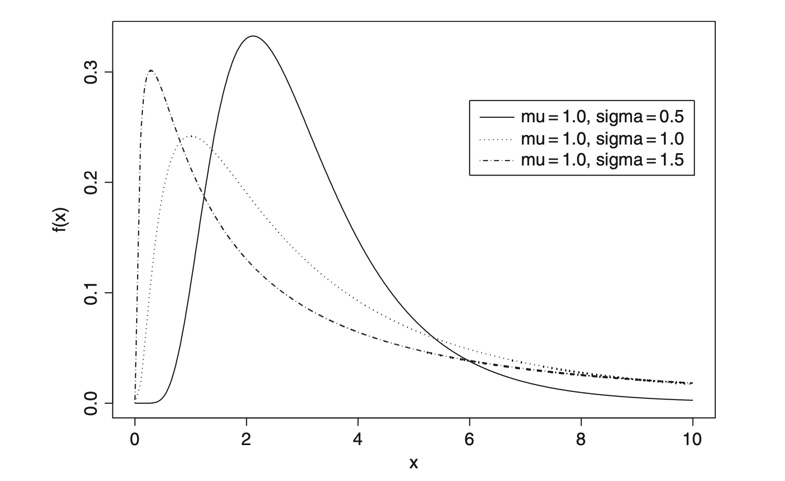
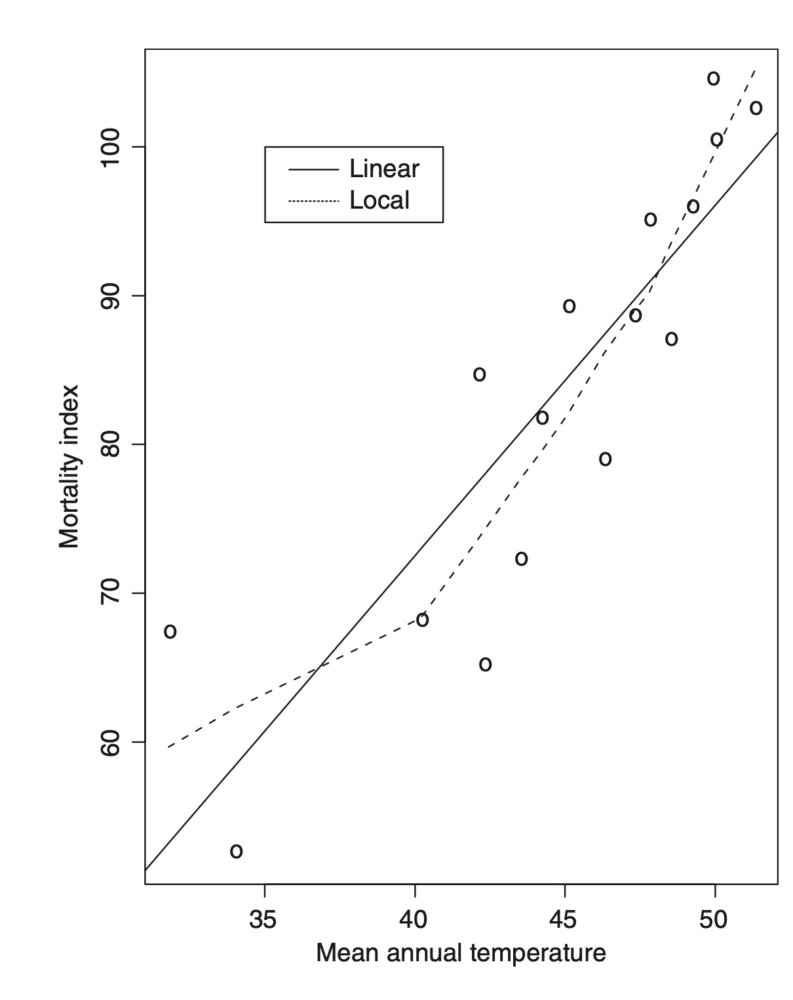
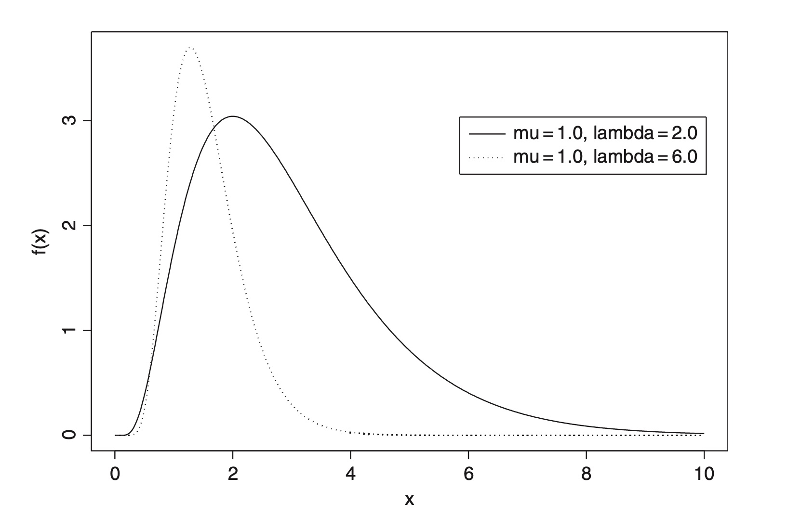
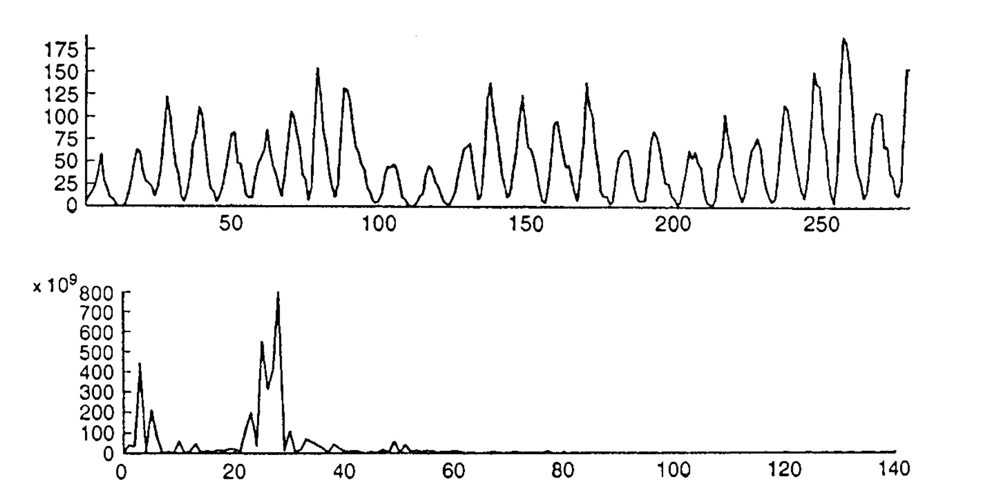

Powerful methods for indirectly simulating random observations from complex, and often high dimensional probability distributions.
Procedures for detecting multiple outliers in a sample of n observations.

A test for comparing two or more sets of survival times, to assess the null hypothesis that there is no difference in the survival experience of the individuals in the different groups.

A method of regression analysis in which polynomials of degree one (linear) or two (quadratic) are used to approximate the regression function in particular ‘neighbourhoods’ of the space of the explanatory variables.
Methods of estimating a probability distribution using estimators.
An attempt to extend the concept of leverage in regression to non-linear models.
A procedure for reducing bias in estimation and providing approximate confidence intervals in cases where these are difficult to obtain in the usual way.

Functions useful for modelling many dose–response relationships in biology.

A method of determining the period of the cyclical term in a time series.
A radically different approach to dealing with uncertainty than the traditional probabilistic and statistical methods.
A method of calculating the Fourier transform of a set of observations.
A procedure that postulates that the correlations or covariances between a set of observed variables.
A model used in investigations of the rate of success of in vitro fertilization.
A model applicable to longitudinal data in which the dropout process may give rise to informative missing values.
A procedure that uses the Taylor series expansion of a function of one or more random variables to obtain approximations to the expected value of the function and to its variance.
A scheme for augmenting observed data so as to make it more easy to analyse.
A mathematical structure modelled on the human neural network and designed to attack many statistical problems, particularly in the areas of pattern recognition, multivariate analysis, learning and memory.
An α% confidence interval for an unknown population parameter θ, say, is an interval, calculated from sample values by a procedure such that if a large number of independent samples is taken, α% of the intervals obtained will contain θ
The attribution of variation in a variable to variations in one or more explanatory variables
A goodness-of-fit test
A test whether there is a linear trend when the response is binary
A parameter that appears in some probability distributions used in statistical inference, particularly the \(t\)-distribution, the chi-squared distribution, and the \(F\)-distribution.
A procedure for the determination of the group to which an individual belongs, based on the characteristics of that individual
A measure of the distance between points in multidimensinal space
A statistical technique to update our believes